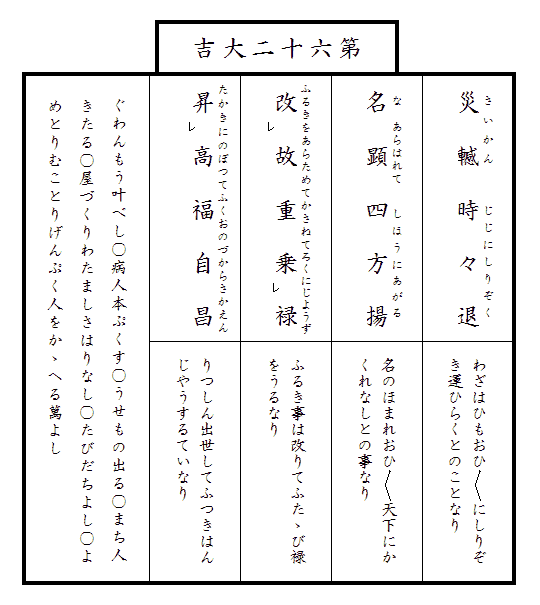

俳諧師松風庵蘿月は
今戸で
常磐津の
師匠をしてゐる
実の
妹をば今年は
盂蘭盆にもたづねずにしまつたので毎日その事のみ気にしてゐる。
然し
日盛りの暑さにはさすがに
家を出かねて
夕方になるのを待つ。
夕方になると
竹垣に朝顔のからんだ勝手口で
行水をつかつた
後其のまゝ
真裸体で
晩酌を傾けやつとの事
膳を離れると、夏の
黄昏も
家々で
焚く
蚊遣の
烟と共にいつか夜となり、
盆栽を
並べた窓の
外の
往来には
簾越しに
下駄の音
職人の
鼻唄人の
話声がにぎやかに
聞え出す。
蘿月は女房のお
滝に注意されてすぐにも
今戸へ
行くつもりで
格子戸を出るのであるが、
其辺の
凉台から声をかけられるがまゝ腰を
下すと、
一杯機嫌の
話好に、毎晩きまつて
埒もなく話し込んでしまふのであつた。
朝夕がいくらか
凉しく楽になつたかと思ふと共に大変
日が短くなつて来た。
朝顔の花が
日毎に小さくなり、
西日が燃える
焔のやうに
狭い
家中へ
差込んで来る
時分になると鳴きしきる
蝉の声が
一際耳立つて
急しく
聞える。八月もいつか
半過ぎてしまつたのである。
家の
後の
玉蜀黍の
畠に吹き渡る風の
響が夜なぞは
折々雨かと
誤たれた。
蘿月は若い
時分したい
放題身を
持崩した
道楽の
名残とて
時候の
変目といへば今だに骨の
節々が痛むので、いつも人より
先に秋の立つのを知るのである。秋になつたと思ふと
唯わけもなく気がせはしくなる。
蘿月は
俄に
狼狽へ出し、
八日頃の
夕月がまだ
真白く
夕焼の空にかゝつてゐる
頃から
小梅瓦町の
住居を
後にテク／＼
今戸をさして歩いて行つた。
堀割づたひに
曳舟通から
直ぐさま左へまがると、土地のものでなければ
行先の
分らないほど
迂囘した
小径が
三囲稲荷の
横手を
巡つて
土手へと通じてゐる。
小径に沿うては
田圃を
埋立てた
空地に、新しい
貸長屋がまだ
空家のまゝに
立並んだ
処もある。
広々した
構への外には大きな
庭石を
据並べた
植木屋もあれば、いかにも
田舎らしい
茅葺の
人家のまばらに立ちつゞいてゐる
処もある。それ
等の
家の
竹垣の
間からは
夕月に
行水をつかつてゐる女の
姿の見える事もあつた。
蘿月宗匠はいくら年をとつても
昔の
気質は
変らないので見て見ぬやうに
窃と
立止るが、
大概はぞつとしない女房ばかりなので、
落胆したやうに
其のまゝ
歩調を早める。そして
売地や
貸家の
札を見て
過る
度々、
何ともつかず
其の
胸算用をしながら自分も
懐手で
大儲がして見たいと思ふ。
然しまた
田圃づたひに歩いて
行く
中水田のところ／″＼に
蓮の花の見事に咲き乱れたさまを
眺め
青々した
稲の葉に
夕風のそよぐ
響をきけば、さすがは
宗匠だけに、
銭勘定の事よりも記憶に散在してゐる
古人の句をば
実に
巧いものだと
思返すのであつた。
土手へ
上つた時には
葉桜のかげは
早や
小暗く水を
隔てた
人家には
灯が見えた。吹きはらふ
河風に
桜の
病葉がはら／＼散る。
蘿月は休まず歩きつゞけた暑さにほつと息をつき、ひろげた胸をば
扇子であふいだが、まだ店をしまはずにゐる
休茶屋を
見付けて
慌忙て
立寄り、「おかみさん、
冷で一杯。」と腰を下した。
正面に
待乳山を
見渡す
隅田川には
夕風を
孕んだ
帆かけ船が
頻りに動いて
行く。水の
面の
黄昏れるにつれて
鴎の羽の色が
際立つて白く見える。
宗匠は
此の
景色を見ると
時候はちがふけれど酒なくて
何の
己れが
桜かなと急に一杯
傾けたくなつたのである。
休茶屋の
女房が
縁の厚い底の
上つたコツプについで出す
冷酒を、
蘿月はぐいと
飲干して
其のまゝ
竹屋の
渡船に乗つた。
丁度河の
中程へ来た
頃から舟のゆれるにつれて
冷酒がおひ／＼にきいて来る。
葉桜の上に輝きそめた
夕月の光がいかにも
凉しい。
滑な満潮の水は「お前どこ
行く」と
流行唄にもあるやうにいかにも
投遣つた
風に
心持よく流れてゐる。
宗匠は目をつぶつて
独で
鼻唄をうたつた。
向河岸へつくと急に
思出して近所の
菓子屋を探して
土産を買ひ
今戸橋を渡つて
真直な道をば自分ばかりは
足許のたしかなつもりで、
実は
大分ふら／＼しながら歩いて行つた。
そこ
此処に二三
軒今戸焼を売る店にわづかな特徴を見るばかり、
何処の
場末にもよくあるやうな低い
人家つゞきの
横町である。
人家の
軒下や
路地口には話しながら
凉んでゐる人の
浴衣が
薄暗い
軒燈の光に
際立つて白く見えながら、あたりは一体にひつそりして
何処かで犬の
吠える声と
赤児のなく声が
聞える。
天の
川の
澄渡つた空に繁つた
木立を
聳かしてゐる
今戸八幡の前まで来ると、
蘿月は
間もなく並んだ
軒燈の間に
常磐津文字豊と
勘亭流で書いた妹の家の
灯を認めた。家の前の
往来には人が二三人も
立止つて
内なる
稽古の
浄瑠璃を聞いてゐた。
折々恐しい音して
鼠の走る
天井からホヤの曇つた
六分心のランプがところ／″＼
宝丹の広告や
都新聞の新年
附録の美人画なぞで
破れ
目をかくした
襖を始め、
飴色に古びた
箪笥、
雨漏のあとのある古びた壁なぞ、八
畳の
座敷一体をいかにも
薄暗く
照してゐる。古ぼけた
葭戸を立てた
縁側の
外には
小庭があるのやら無いのやら
分らぬほどな
闇の中に
軒の
風鈴が
淋しく鳴り虫が
静に鳴いてゐる。
師匠のお
豊は
縁日ものゝ
植木鉢を
並べ、
不動尊の
掛物をかけた
床の
間を
後にしてべつたり
坐つた
膝の上に
三味線をかゝへ、
樫の
撥で時々
前髪のあたりをかきながら、
掛声をかけては
弾くと、
稽古本を広げた
桐の
小机を中にして
此方には三十前後の商人らしい男が
中音で、「そりや
何を
云はしやんす、今さら兄よ妹と
云ふに
云はれぬ
恋中は………。」と「
小稲半兵衛」の
道行を語る。
蘿月は
稽古のすむまで
縁近くに坐つて、
扇子をぱちくりさせながら、まだ
冷酒のすつかり
醒めきらぬ
処から、時々は
我知らず口の中で
稽古の男と一しよに
唄つたが、時々は目をつぶつて
遠慮なく

をした
後、
身体を軽く
左右にゆすりながらお
豊の顔をば
何の
気もなく
眺めた。お
豊はもう四十以上であらう。
薄暗い
釣ランプの光が
痩せこけた
小作りの
身体をば
猶更に
老けて見せるので、ふいと
此れが
昔は
立派な質屋の
可愛らしい
箱入娘だつたのかと思ふと、
蘿月は悲しいとか
淋しいとか
然う
云ふ現実の
感慨を
通過して、
唯だ／＼
不思議な気がしてならない。
其の
頃は自分も
矢張若くて美しくて、女にすかれて、道楽して、とう／＼
実家を
七生まで
勘当されてしまつたが、今になつては
其の
頃の事はどうしても事実ではなくて夢としか思はれない。
算盤で
乃公の頭をなぐつた
親爺にしろ、泣いて意見をした
白鼠の番頭にしろ、
暖簾を分けて
貰つたお
豊の
亭主にしろ、さう
云ふ人達は
怒つたり笑つたり泣いたり喜んだりして、汗をたらして
飽きずによく働いてゐたものだが、
一人々々皆死んでしまつた
今日となつて見れば、あの人達はこの世の中に生れて来ても来なくてもつまる
処は同じやうなものだつた。まだしも自分とお
豊の生きてゐる
間は、あの人達は
両人の記憶の
中に残されてゐるものゝ、やがて自分達も死んでしまへばいよ／＼
何も
彼も
煙になつて
跡方もなく消え
失せてしまふのだ………。
「
兄さん、
実は二三日
中に
私の
方からお
邪魔に
上らうと思つてゐたんだよ。」とお
豊が
突然話しだした。
稽古の男は
小稲半兵衛をさらつた
後同じやうなお
妻八郎兵衛の
語出しを二三度
繰返して帰つて行つたのである。
蘿月は
尤もらしく
坐り
直して
扇子で軽く
膝を
叩いた。
「
実はね。」とお
豊は同じ言葉を
繰返して、「
駒込のお寺が
市区改正で
取払ひになるんだとさ。それでね、死んだお
父つアんのお墓を
谷中か
染井か
何処かへ移さなくつちやならないんだつてね、四五日
前にお寺からお
使が来たから、どうしたものかと、
其の相談に行かうと思つてたのさ。」
「
成程。」と
蘿月は
頷付いて、「さういふ事なら
打捨つても置けまい。もう何年になるかな、
親爺が死んでから………。」
首を
傾げて考へたが、お
豊の
方は
着々話しを進めて
染井の墓地の
地代が一
坪いくら、寺への
心付けが
何うのかうのと、それについては女の身よりも男の
蘿月に万事を
引受けて
取計らつて
貰ひたいと
云ふのであつた。
蘿月はもと
小石川表町の
相模屋と
云ふ質屋の
後取息子であつたが
勘当の
末若隠居の身となつた。
頑固な父が世を去つてからは妹お
豊を妻にした店の番頭が正直に
相模屋の商売をつゞけてゐた。
処が
御維新此の
方時勢の
変遷で次第に
家運の傾いて来た
折も
折火事にあつて質屋はそれなり
潰れてしまつた。で、
風流三昧の
蘿月は
已むを得ず
俳諧で世を渡るやうになり、お
豊は
其の
後亭主に
死別れた不幸つゞきに
昔名を取つた
遊芸を幸ひ
常磐津の
師匠で
生計を立てるやうになつた。お
豊には今年十八になる男の子が一人ある。
零落した
女親がこの世の楽しみと
云ふのは
全く
此の
一人息子長吉の
出世を見やうと
云ふ事ばかりで、商人はいつ失敗するか
分らないと
云ふ経験から、お
豊は三度の
飯を二度にしても、行く／＼はわが
児を大学校に入れて
立派な
月給取りにせねばならぬと思つて
居る。
蘿月宗匠は冷えた茶を
飲干しながら、「
長吉はどうしました。」
するとお
豊はもう得意らしく、「学校は
今夏休みですがね、遊ばしといちやいけないと思つて
本郷まで
夜学にやります。」
「ぢや帰りは
晩いね。」
「えゝ。いつでも十時過ぎますよ。電車はありますがね、
随分遠路ですからね。」
「
我輩とは違つて
今時の若いものは感心だね。」
宗匠は言葉を切つて、「中学校だつけね、
乃公は子供を持つた事がねえから
当節の学校の事はちつとも
分らない。大学校まで行くにやまだ
余程かゝるのかい。」
「来年卒業してから試験を受けるんでさアね。大学校へ行く前に、もう一ツ………大きな学校があるんです。」お
豊は
何も
彼も一口に説明してやりたいと心ばかりは
急つても、
矢張り
時勢に
疎い女の事で
忽ち
云淀んでしまつた。
「たいした
経費だらうね。」
「えゝ
其ア、
大抵ぢや
有りませんよ。
何しろ、あなた、
月謝ばかりが
毎月一円、本代だつて試験の
度々に二三円ぢやきゝませんしね、
其れに
夏冬ともに洋服を着るんでせう、靴だつて年に二足は
穿いてしまひますよ。」
お
豊は
調子づいて苦心の
程を一倍強く見せやうためか声に力を入れて話したが、
蘿月はその時、
其れ
程にまで無理をするなら、
何も大学校へ入れないでも、
長吉にはもつと身分
相応な
立身の
途がありさうなものだといふ気がした。しかし口へ出して
云ふほどの事でもないので、
何か話題の変化をと望む
矢先へ、自然に思ひ出されたのは
長吉が子供の
時分の遊び友達でお
糸と
云つた
煎餅屋の娘の事である。
蘿月は
其の
頃お
豊の家を訪ねた時にはきまつて
甥の
長吉とお
糸をつれては
奥山や
佐竹ツ
原の
見世物を見に行つたのだ。
「
長吉が十八ぢや、あの
娘はもう
立派な
姉さんだらう。
矢張稽古に来るかい。」
「
家へは来ませんがね、この
先の
杵屋さんにや毎日
通つてますよ。もう
直き
葭町へ出るんだつて
云ひますがね………。」とお
豊は
何か考へるらしく
語を切つた。
「
葭町へ出るのか。そいつア
豪儀だ。子供の時からちよいと口のきゝやうのませた、
好い
娘だつたよ。
今夜にでも遊びに来りやアいゝに。ねえ、お
豊。」と
宗匠は急に元気づいたが、お
豊はポンと
長煙管をはたいて、
「以前とちがつて、
長吉も今が勉強ざかりだしね………。」
「はゝゝゝは。間違ひでもあつちやならないと
云ふのかね。
尤もだよ。この道ばかりは
全く油断がならないからな。」
「ほんとさ。お
前さん。」お
豊は首を長く
延して、「私の
僻目かも知れないが、
実はどうも
長吉の
様子が心配でならないのさ。」
「だから、
云はない
事ツちやない。」と
蘿月は軽く
握り
拳で
膝頭をたゝいた。お
豊は
長吉とお
糸のことが
唯何となしに心配でならない。と
云ふのは、お
糸が
長唄の
稽古帰りに
毎朝用もないのに
屹度立寄つて見る、
其れをば
長吉は必ず待つてゐる
様子で
其の時間
頃には
一足だつて窓の
傍を去らない。
其れのみならず、いつぞやお
糸が病気で十日
程も寝てゐた時には、
長吉は
外目も
可笑しい
程にぼんやりして
居た事などを息もつかずに語りつゞけた。
次の
間の時計が九時を
打出した時
突然格子戸ががらりと明いた。
其の明け
様でお
豊はすぐに
長吉の帰つて来た事を知り急に話を
途切し
其の
方に
振返りながら、
「大変早いやうだね、
今夜は。」
「先生が病気で一時間早くひけたんだ。」
「
小梅の
伯父さんがおいでだよ。」
返事は
聞えなかつたが、
次の
間に
包を
投出す音がして、
直様長吉は
温順しさうな弱さうな色の白い顔を
襖の
間から見せた。
残暑の
夕日が一しきり夏の
盛よりも
烈しく、ひろ／″＼した
河面一帯に燃え立ち、
殊更に大学の
艇庫の
真白なペンキ
塗の
板目に反映してゐたが、
忽ち
燈の光の消えて
行くやうにあたりは全体に
薄暗く灰色に
変色して来て、満ち
来る
夕汐の上を
滑つて
行く
荷船の
帆のみが
真白く
際立つた。と見る
間もなく
初秋の
黄昏は幕の
下るやうに早く夜に
変つた。流れる水がいやに
眩しくきら／＼光り出して、
渡船に乗つて
居る人の形をくつきりと
墨絵のやうに黒く
染め出した。
堤の上に長く
横はる
葉桜の
木立は
此方の岸から望めば
恐しいほど
真暗になり、
一時は
面白いやうに引きつゞいて動いてゐた
荷船はいつの
間にか一
艘残らず上流の
方に消えてしまつて、
釣の帰りらしい
小舟がところ／″＼
木の
葉のやうに浮いてゐるばかり、
見渡す
隅田川は再びひろ／″＼としたばかりか
静に
淋しくなつた。
遥か
川上の空のはづれに夏の
名残を示す雲の
峰が立つてゐて細い
稲妻が
絶間なく
閃めいては消える。
長吉は
先刻から一人ぼんやりして、
或時は
今戸橋の
欄干に
凭れたり、
或時は岸の
石垣から
渡場の
桟橋へ
下りて見たりして、
夕日から
黄昏、
黄昏から夜になる
河の
景色を
眺めて
居た。
今夜暗くなつて人の顔がよくは見えない
時分になつたら
今戸橋の上でお
糸と
逢ふ約束をしたからである。
然し
丁度日曜日に
当つて
夜学校を
口実にも
出来ない
処から
夕飯を
済すが
否やまだ
日の落ちぬ
中ふいと
家を出てしまつた。一しきり
渡場へ急ぐ人の
往来も今では
殆ど絶え、橋の下に
夜泊りする
荷船の
燈火が
慶養寺の高い
木立を
倒に映した
山谷堀の水に美しく流れた。
門口に
柳のある新しい二階
家からは
三味線が
聞えて、水に添ふ低い
小家の
格子戸外には
裸体の
亭主が
凉みに出はじめた。
長吉はもう来る
時分であらうと思つて
一心に橋
向うを
眺めた。
最初に橋を渡つて来た人影は黒い
麻の
僧衣を着た
坊主であつた。つゞいて
尻端折の
股引にゴム靴をはいた
請負師らしい男の
通つた
後、
暫くしてから、
蝙蝠傘と
小包を
提げた貧し
気な女房が
日和下駄で色気もなく砂を
蹴立てゝ
大股に歩いて行つた。もういくら待つても
人通りはない。
長吉は
詮方なく疲れた眼を
河の
方に移した。
河面は
先刻よりも一体に
明くなり
気味悪い雲の
峯は影もなく消えてゐる。
長吉は
其の時
長命寺辺の
堤の上の
木立から、
他分旧暦七月の満月であらう、
赤味を帯びた大きな月の昇りかけて
居るのを認めた。空は鏡のやうに
明いのでそれを
遮る
堤と
木立はます／＼黒く、星は
宵の
明星の
唯た一つ見えるばかりで
其の
他は
尽く余りに
明い空の光に
掻き消され、横ざまに長く
棚曳く雲のちぎれが銀色に
透通つて輝いてゐる。見る／＼
中満月が
木立を離れるに従ひ
河岸の
夜露をあびた
瓦屋根や、水に
湿れた
棒杭、
満潮に流れ寄る
石垣下の
藻草のちぎれ、船の
横腹、
竹竿なぞが、
逸早く月の光を受けて
蒼く輝き出した。
忽ち
長吉は自分の影が
橋板の上に段々に
濃く
描き出されるのを知つた。
通りかゝるホーカイ
節の男女が二人、「まア
御覧よ。お月様。」と
云つて
暫く
立止つた
後、
山谷堀の
岸辺に
曲るが
否や
当付がましく、

書生さん橋の
欄干に腰
打かけて―――
と立ちつゞく
小家の前で歌つたが金にならないと見たか歌ひも
了らず、元の
急足で
吉原土手の
方へ行つてしまつた。
長吉はいつも
忍会の恋人が経験するさま／″＼の
懸念と待ちあぐむ心のいらだちの
外に、
何とも知れぬ一種の
悲哀を感じた。お
糸と自分との
行末………
行末と
云ふよりも
今夜会つて
後の
明日はどうなるのであらう。お
糸は
今夜兼てから話のしてある
葭町の芸者屋まで
出掛けて相談をして来ると
云ふ事で、
其の
道中をば二人一緒に話しながら歩かうと約束したのである。お
糸がいよ／＼芸者になつてしまへば
此れまでのやうに毎日
逢ふ事ができなくなるのみならず、それが
萬事の
終りであるらしく思はれてならない。自分の知らない
如何にも遠い国へと再び帰る事なく
去つてしまふやうな気がしてならないのだ。
今夜のお月様は忘れられない。一生に二度見られない月だなアと
長吉はしみじみ思つた。あらゆる記憶の
数々が電光のやうに
閃く。最初
地方町の小学校へ行く
頃は毎日のやうに
喧嘩して遊んだ。やがては
皆なから近所の
板塀や
土蔵の壁に
相々傘をかゝれて
囃された。
小梅の
伯父さんにつれられて
奥山の
見世物を見に行つたり池の
鯉に
麩をやつたりした。
三社祭の
折お
糸は
或年踊屋台へ出て
道成寺を踊つた。町内一同で
毎年汐干狩に
行く船の上でもお
糸はよく踊つた。学校の帰り道には毎日のやうに
待乳山の
境内で
待合せて、人の知らない
山谷の
裏町から
吉原田圃を歩いた………。あゝ、お
糸は
何故芸者なんぞになるんだらう。芸者なんぞになつちやいけないと
引止めたい。
長吉は無理にも
引止めねばならぬと決心したが、すぐ
其の
傍から、自分はお
糸に対しては
到底それだけの
威力のない事を
思返した。
果敢い絶望と
諦めとを感じた。お
糸は二ツ年下の十六であるが、
此頃になつては長吉は
殊更に
日一
日とお
糸が
遥か年上の姉であるやうな
心持がしてならぬのであつた。いや最初からお
糸は
長吉よりも強かつた。
長吉よりも
遥に
臆病ではなかつた。お
糸長吉と
相々傘にかゝれて
皆なから
囃された時でもお
糸は
びくともしなかつた。平気な顔で
長ちやんはあたいの
旦那だよと
怒鳴つた。去年初めて学校からの帰り道を
待乳山で待ち合はさうと
申出したのもお
糸であつた。
宮戸座の
立見へ
行かうと
云つたのもお
糸が
先であつた。帰りの
晩くなる事をもお
糸の方が
却て心配しなかつた。知らない道に迷つても、お
糸は
行ける
処まで
行つて
御覧よ。
巡査さんにきけば
分るよと
云つて、
却て
面白さうにづん／＼歩いた………。
あたりを
構はず
橋板の上に
吾妻下駄を
鳴す
響がして、
小走りに
突然お
糸がかけ寄つた。
「おそかつたでせう。気に入らないんだもの、
母さんの
結つた髪なんぞ。」と
馳け出した
為めに
殊更ほつれた
鬢を直しながら、「をかしいでせう。」
長吉はたゞ眼を
円くしてお
糸の顔を見るばかりである。いつもと変りのない元気のいゝはしやぎ切つた
様子がこの場合
寧ろ
憎らしく思はれた。遠い
下町に行つて芸者になつてしまふのが
少しも悲しくないのかと
長吉は
云ひたい事も胸一ぱいになつて口には出ない。お
糸は
河水を
照す玉のやうな月の光にも
一向気のつかない
様子で、
「早く
行かうよ。
私お金持ちだよ。
今夜は。
仲店でお
土産を買つて
行くんだから。」とすた／＼歩きだす。
「
明日、きつと帰るか。」
長吉は
吃るやうにして
云ひ切つた。
「
明日帰らなければ、
明後日の朝はきつと帰つて来てよ。
不断着だの、いろんなもの持つて行かなくつちやならないから。」
待乳山の
麓を
聖天町の
方へ出やうと細い
路地をぬけた。
「
何故黙つてるのよ。どうしたの。」
「
明後日帰つて来てそれから
又彼方へ
去つてしまふんだらう。え。お
糸ちやんはもう
其れなり
向うの人になつちまふんだらう。もう
僕とは会へないんだらう。」
「ちよい／＼遊びに帰つて来るわ。だけれど、
私も一生懸命にお
稽古しなくつちやならないんだもの。」
少しは声を
曇したものゝ
其の
調子は
長吉の満足するほどの
悲愁を帯びてはゐなかつた。
長吉は
暫くしてから
又突然に、
「なぜ芸者なんぞになるんだ。」
「
又そんな事きくの。をかしいよ。
長さんは。」
お
糸は
已に
長吉のよく知つてゐる事情をば再びくど／＼しく
繰返した。お
糸が芸者になると
云ふ事は二三年いやもつと前から
長吉にも
能く
分つてゐた事である。
其の
起因は
大工であつたお
糸の父親がまだ生きて
居た
頃から
母親は
手内職にと針仕事をしてゐたが、その
得意先の一
軒で
橋場の
妾宅にゐる
御新造がお
糸の
姿を見て
是非娘分にして
行末は
立派な芸者にしたてたいと
云出した事からである。
御新造の
実家は
葭町で
幅のきく
芸者家であつた。
然し
其の
頃のお
糸の
家はさほどに困つても
居なかつたし、第一に
可愛い
盛の子供を手放すのが
辛かつたので、親の
手元でせいぜい芸を仕込ます事になつた。
其後父親が死んだ
折には
差当り頼りのない母親は
橋場の
御新造の世話で今の
煎餅屋を出したやうな関係もあり、
萬事が金銭上の義理ばかりでなくて
相方の好意から自然とお
糸は
葭町へ
行くやうに
誰れが
強ひるともなく
決つて
居たのである。百も承知してゐるこんな事情を
長吉はお
糸の口からきく
為めに質問したのでない。お
糸がどうせ
行かねばならぬものなら、もう
少し悲しく自分の
為めに
別を
惜しむやうな
調子を見せて
貰ひたいと思つたからだ。
長吉は自分とお
糸の
間にはいつの
間にか
互に
疎通しない感情の相違の生じて
居る事を
明かに知つて、
更に深い
悲みを感じた。
この
悲みはお
糸が
土産物を買ふ
為め
仁王門を過ぎて
仲店へ出た時
更に
又堪へがたいものとなつた。
夕凉に
出掛ける
賑かな
人出の中にお
糸はふいと
立止つて、
並んで歩く
長吉の
袖を引き、「
長さん、あたいも
直きあんな
扮装するんだねえ。
絽縮緬だねきつと、あの
羽織………。」
長吉は
云はれるまゝに
見返ると、
島田に
結つた芸者と、
其れに
連立つて
行くのは
黒絽の
紋付をきた
立派な
紳士であつた。あゝお
糸が芸者になつたら一緒に手を引いて歩く人は
矢張あゝ
云ふ
立派な
紳士であらう。自分は何年たつたらあんな
紳士になれるのか知ら。
兵児帯一ツの
現在の書生
姿が
云ふに
云はれず
情なく思はれると同時に、
長吉は
其の将来どころか現在に
於ても、
已に単純なお
糸の友達たる資格さへないものゝやうな
心持がした。
いよ／＼
御神燈のつゞいた
葭町の
路地口へ来た時、
長吉はもう
此れ以上
果敢いとか悲しいとか思ふ元気さへなくなつて、
唯だぼんやり、
狭く暗い
路地裏のいやに
奥深く
行先知れず
曲込んでゐるのを不思議さうに
覗込むばかりであつた。
「あの、
一ィ
二ゥ
三ィ………四つ目の
瓦斯燈の出てるところだよ。
松葉屋と書いてあるだらう。ね。あの
家よ。」とお
糸は
屡橋場の
御新造につれて来られたり、
又はその用事で使ひに来たりして
能く知つてゐる
軒先の
燈を指し示した。
「ぢやア
僕は帰るよ。もう………。」と
云ふばかりで
長吉は
矢張り
立止つてゐる。その
袖をお
糸は軽く
捕へて
忽ち
媚るやうに
寄添ひ、
「
明日か
明後日、
家へ帰つて来た時きつと
逢はうね。いゝかい。きつとよ。約束してよ。あたいの
家へお
出よ。よくツて。」
「あゝ。」
返事をきくと、お
糸は
其れですつかり安心したものゝ
如くすた／＼
路地の
溝板を
吾妻下駄に踏みならし
振返りもせずに行つてしまつた。
其の足音が
長吉の耳には急いで
馳けて
行くやうに
聞えた、かと思ふ
間もなく、ちりん／＼と
格子戸の鈴の音がした。
長吉は覚えず
後を追つて
路地内へ
這入らうとしたが、同時に一番近くの
格子戸が
人声と共に
開いて、細長い
弓張提灯を持つた男が出て来たので、
何と
云ふ事なく長吉は
気後れのしたばかりか、顔を見られるのが
厭さに、
一散に
通りの
方へと
遠かつた。
円い月は形が
大分小くなつて光が
蒼く
澄んで、
静に
聳える
裏通りの
倉の
屋根の上、星の多い空の
真中に高く昇つて
居た。
月の
出が
夜毎おそくなるにつれて
其の光は段々
冴えて来た。
河風の
湿ツぽさが次第に強く感じられて来て
浴衣の
肌がいやに
薄寒くなつた。月はやがて人の起きて
居る
頃にはもう昇らなくなつた。空には朝も
昼過ぎも
夕方も、いつでも雲が多くなつた。雲は
重り合つて絶えず動いてゐるので、時としては
僅かに
其の
間々に
殊更らしく色の
濃い青空の残りを見せて置きながら、
空一面に
蔽ひ
冠さる。すると気候は
恐しく
蒸暑くなつて来て、自然と
浸み出る
脂汗が
不愉快に人の
肌をねば／＼させるが、
然し
又、さう
云ふ時にはきまつて、
其の強弱と
其の方向の定まらない風が
突然に吹き
起つて、雨もまた
降つては
止み、
止んではまた降りつゞく事がある。この風やこの雨には一種特別の
底深い力が含まれて
居て、寺の
樹木や、
河岸の
葦の葉や、
場末につゞく貧しい家の
板屋根に、春や夏には決して聞かれない
音響を伝へる。日が
恐しく早く暮れてしまふだけ、長い
夜はすぐに
寂々と
更け渡つて来て、夏ならば
夕凉みの
下駄の音に
遮られてよくは
聞えない八時か九時の
時の
鐘があたりをまるで十二時の
如く
静にしてしまふ。
蟋蟀の声はいそがしい。
燈火の色はいやに
澄む。秋。あゝ秋だ。
長吉は初めて秋といふものは
成程いやなものだ。
実に
淋しくつて
堪らないものだと身にしみ／″＼感じた。
学校はもう
昨日から
始つてゐる。朝早く母親の用意して
呉れる弁当箱を書物と一所に包んで
家を出て見たが、二日目三日目にはつく／″＼遠い
神田まで歩いて
行く気力がなくなつた。今までは
毎年長い夏休みの
終る
頃と
云へば学校の
教場が
何となく恋しく授業の開始する日が
心待に待たれるやうであつた。
其のうひ／＼しい
心持はもう
全く消えてしまつた。つまらない。学問なんぞしたつてつまるものか。学校は
己れの望むやうな幸福を与へる
処ではない。………幸福とは無関係のものである事を
長吉は
物新しく感じた。
四日目の朝いつものやうに七時前に
家を出て
観音の
境内まで歩いて来たが、
長吉はまるで疲れきつた
旅人が
路傍の石に
腰をかけるやうに、本堂の
横手のベンチの上に
腰を
下した。いつの
間に
掃除をしたものか
朝露に
湿つた
小砂利の上には、
投捨てた
汚い
紙片もなく、朝早い
境内はいつもの
雑沓に引かへて
妙に広く
神々しく
寂としてゐる。本堂の
廊下には
此処で
夜明ししたらしい
迂散な男が今だに
幾人も
腰をかけて
居て、
其の中には
垢じみた
単衣の
三尺帯を解いて平気で
褌をしめ直してゐる
奴もあつた。
此頃の
空癖で空は低く
鼠色に
曇り、あたりの
樹木からは
虫噛んだ青いまゝの
木葉が絶え間なく落ちる。
烏や
鶏の
啼声鳩の
羽音が
爽かに力強く
聞える。
溢れる水に
濡れた
御手洗の石が
飜へる
奉納の
手拭のかげにもう
何となく
冷いやうに思はれた。
其れにも
拘らず
朝参りの男女は本堂の階段を
上る前に
何れも手を洗ふ
為めにと
立止まる。
其の人々の中に
長吉は
偶然にも若い一人の芸者が、口には桃色のハンケチを
啣へて、
一重羽織の
袖口を
濡すまい
為めか、
真白な
手先をば腕までも見せるやうに長くさし
伸してゐるのを認めた。同時にすぐ
隣のベンチに腰をかけてゐる書生が二人、「見ろ／＼、ジンゲルだ。わるくないなア。」と
云つてゐるのさへ耳にした。
島田に
結つて弱々しく
両肩の
撫で
下つた
小作りの
姿と、
口尻のしまつた
円顔、十六七の同じやうな
年頃とが、
長吉をして
其の
瞬間危くベンチから飛び立たせやうとした
程お
糸のことを連想せしめた。お
糸は月のいゝあの晩に約束した通り、
其の
翌々日に、
其れからは長く
葭町の人たるべく
手荷物を取りに帰つて来たが、
其の時
長吉はまるで別の人のやうにお
糸の
姿の
変つてしまつたのに驚いた。赤いメレンスの帯ばかり
締めて
居た
娘姿が、
突然たつた一日の
間に、
丁度今
御手洗で手を洗つてゐる若い芸者その
儘の
姿になつてしまつたのだ。
薬指にはもう
指環さへ
穿めてゐた。用もないのに
幾度となく帯の
間から
鏡入れや
紙入を抜き出して、
白粉をつけ直したり
鬢のほつれを
撫で上げたりする。
戸外には車を待たして置いていかにも
急しい大切な用件を身に帯びてゐると
云つた
風で一時間もたつかたゝない
中に帰つてしまつた。
其の帰りがけ
長吉に残した最後の言葉は
其の母親の「
御師匠さんのをばさん」にもよろしく
云つてくれと
云ふ事であつた。まだ
何時出るのか
分らないから
又近い
中に遊びに来るわと
云ふ
懐しい声も
聞れないのではなかつたが、
其れはもう今までのあどけない約束ではなくて、
世馴れた人の
如才ない
挨拶としか
長吉には
聞取れなかつた。娘であつたお
糸、
幼馴染の恋人のお
糸はこの世にはもう生きてゐないのだ。
路傍に寝て
居る犬を
驚して
勢よく
駈け去つた車の
後に、えも
云はれず
立迷つた
化粧の
匂ひが、いかに苦しく、いかに
切なく
身中にしみ渡つたであらう………。
本堂の中にと消えた若い芸者の
姿は再び階段の下に
現れて
仁王門の
方へと、
素足の
指先に
突掛けた
吾妻下駄を
内輪に軽く踏みながら歩いて
行く。
長吉は
其の
後姿を
見送ると
又更に
恨めしいあの車を
見送つた時の一
刹那を
思起すので、もう
何としても
我慢が
出来ぬといふやうにベンチから
立上つた。そして知らず／＼
其の
後を追ふて
仲店の
尽るあたりまで来たが、若い芸者の
姿は
何処の
横町へ
曲つてしまつたものか、もう見えない。
両側の店では店先を
掃除して品物を
並べたてゝゐる
最中である。
長吉は
夢中で
雷門の
方へどん／＼歩いた。若い芸者の
行衛を
見究めやうと
云ふのではない。自分の眼にばかりあり／＼見えるお
糸の
後姿を追つて
行くのである。学校の事も
何も
彼も忘れて、
駒形から
蔵前、
蔵前から
浅草橋………
其れから
葭町の方へとどん／＼歩いた。
然し電車の
通つてゐる
馬喰町の
大通りまで来て、
長吉は
何の
横町を
曲ればよかつたのか
少しく
当惑した。けれども大体の方角はよく
分つてゐる。東京に生れたものだけに道をきくのが
厭である。恋人の住む町と思へば、
其の名を
徒に
路傍の他人に
漏すのが、心の秘密を探られるやうで、
唯わけもなく
恐しくてならない。
長吉は
仕方なしに
唯だ左へ左へと、いゝかげんに
折れて
行くと
蔵造りの問屋らしい
商家のつゞいた同じやうな
堀割の岸に二度も出た。
其の結果
長吉は
遥か
向うに
明治座の
屋根を見てやがて
稍広い
往来へ出た時、
其の遠い道のはづれに
河蒸汽船の
汽笛の音の
聞えるのに、初めて自分の位置と町の方角とを
覚つた。同時に非常な
疲労を感じた。
制帽を
冠つた
額のみならず汗は
袴をはいた帯のまはりまでしみ出してゐた。
然しもう一
瞬間とても休む気にはならない。
長吉は月の
夜に連れられて来た
路地口をば、これは
又一層の苦心、一層の
懸念、一層の疲労を
以つて、やつとの事で
見出し得たのである。
片側に
朝日がさし込んで
居るので
路地の
内は
突当りまで
見透された。
格子戸づくりの
小い
家ばかりでない。
昼間見ると意外に
屋根の高い
倉もある。
忍返しをつけた
板塀もある。
其の上から
松の枝も見える。
石灰の散つた便所の
掃除口も見える。
塵芥箱の
並んだ
処もある。
其の
辺に猫がうろ／＼して
居る。
人通りは案外に
烈しい。
極めて
狭い
溝板の上を通行の人は
互に身を
斜めに
捻向けて
行き
交ふ。
稽古の
三味線に人の
話声が
交つて
聞える。
洗物する
水音も
聞える。赤い
腰巻に
裾をまくつた
小女が
草箒で
溝板の上を
掃いてゐる。
格子戸の
格子を一本々々一生懸命に
磨いて
居るのもある。
長吉は
人目の多いのに
気後れしたのみでなく、さて
路地内に
進入つたにした
処で、自分はどうするのかと初めて反省の地位に返つた。
人知れず
松葉屋の前を通つて、そつとお
糸の
姿を
垣間見たいとは思つたが、あたりが余りに
明過ぎる。さらば
此のまゝ
路地口に立つてゐて、お
糸が何かの用で外へ出るまでの機会を待たうか。
然しこれもまた、
長吉には近所の
店先の
人目が
尽く自分ばかりを
見張つて
居るやうに思はれて、とても五分と長く立つてゐる事はできない。
長吉は
兎に
角思案をしなほすつもりで、
折から近所の子供を得意にする
粟餅屋の
爺がカラカラカラと
杵をならして来る
向うの
横町の方へと
遠かつた。
長吉は
浜町の
横町をば次第に道の
行くまゝに
大川端の方へと歩いて行つた。いか
程機会を待つても
昼中はどうしても不便である事を
僅かに
悟り得たのであるが、すると、今度はもう学校へは
遅くなつた。休むにしても
今日の
半日、これから午後の三時までをどうして
何処に消費しやうかと
云ふ問題の解決に
迫められた。母親のお
豊は学校の時間割までをよく
知抜いてゐるので、
長吉の帰りが一時間早くても、
晩くても、すぐに心配して
煩く質問する。
無論長吉は
何とでも
容易く
云紛らすことは
出来ると思ふものゝ、
其れだけの
嘘をつく良心の苦痛に
逢ふのが
厭でならない。
丁度来かゝる
川端には、
水練場の
板小屋が
取払はれて、
柳の
木蔭に人が
釣をしてゐる。
其れをば通りがゝりの人が四人も五人もぼんやり立つて見てゐるので、
長吉はいゝ都合だと同じやうに
釣を
眺める
振で
其のそばに
立寄つたが、もう立つてゐるだけの力さへなく、
柳の
根元の
支木に
背をよせかけながら
蹲踞んでしまつた。
さつきから空の
大半は
真青に晴れて来て、絶えず風の吹き
通ふにも
拘らず、ぢり／＼人の
肌に
焼附くやうな
湿気のある秋の日は、目の前なる
大川の水一面に
眩しく照り輝くので、
往来の片側に長くつゞいた
土塀からこんもりと枝を
伸した繁りの
蔭がいかにも
凉しさうに思はれた。
甘酒屋の
爺がいつか
此の
木蔭に赤く
塗つた
荷を
下してゐた。
川向は日の光の強い
為に
立続く
人家の
瓦屋根をはじめ一帯の
眺望がいかにも
汚らしく見え、風に追ひやられた雲の列が
盛に
煤煙を
吐く
製造場の
烟筒よりも
遥に低く、動かずに層をなして
浮んでゐる。
釣道具を売る
後の
小家から十一時の時計が鳴つた。
長吉は数へながら
其れを聞いて、初めて自分はいかに長い時間を歩き
暮したかに
驚いたが、同時に
此の
分で行けば三時までの時間を
空費するのもさして
難くはないと
稍安心することも
出来た。
長吉は
釣師の一人が
握飯を食ひはじめたのを見て、同じやうに
弁当箱を開いた。開いたけれども
何だか
気まりが悪くて、
誰か見てゐやしないかときよろ／＼
四辺を
見
した。幸ひ
午近くのことで
見渡す川岸に人の
往来は
杜絶えてゐる。
長吉は
出来るだけ早く
飯でも
菜でも
皆な
鵜呑みにしてしまつた。
釣師はいづれも木像のやうに黙つてゐるし、
甘酒屋の
爺は
居眠りしてゐる。
午過の
川端はます／＼
静になつて犬さへ歩いて来ない
処から、
流石の
長吉も自分は
何故こんなに
気まりを悪がるのであらう
臆病なのであらうと我ながら
可笑しい気にもなつた。
両国橋と
新大橋との
間を
一した
後、
長吉はいよ／＼浅草の
方へ帰らうと決心するにつけ、「もしや」といふ一念にひかされて再び
葭町の
路地口に
立寄つて見た。すると午前ほどには
人通りがないのに
先ず安心して、おそる／＼
松葉屋の前を
通つて見たが、
家の中は外から見ると非常に暗く、人の声
三味線の音さへ
聞えなかつた。けれども
長吉には
誰にも
咎められずに恋人の住む
家の前を
通つたと
云ふそれだけの事が、
殆んど
破天荒の冒険を
敢てしたやうな満足を感じさせたので、これまで歩きぬいた身の疲労と苦痛とを
長吉は
遂に
後悔しなかつた。
その週間の残りの
日数だけはどうやらかうやら、
長吉は学校へ
通つたが、日曜日一日を
過すと
其の
翌朝は電車に乗つて上野まで来ながらふいと
下りてしまつた。教師に
差出すべき代数の宿題を一つもやつて置かなかつた。英語と漢文の
下読をもして置かなかつた。それのみならず
今日は
又、
凡そ世の中で
何よりも
嫌ひな
何よりも
恐しい機械体操のある事を思ひ出したからである。
長吉には鉄棒から
逆にぶらさがつたり、人の
丈より高い
棚の上から
飛下りるやうな事は、いかに
軍曹上りの教師から
強ひられても
全級の生徒から一
斉に笑はれても
到底出来得べきことではない。
何によらず体育の
遊戯にかけては、
長吉はどうしても
他の生徒一同に伴つて
行く事が
出来ないので、自然と
軽侮の声の中に
孤立する。
其の結果は、
遂に一同から
意地悪くいぢめられる事になり
易い。学校は単にこれだけでも
随分厭な
処、苦しいところ、
辛い
処であつた。されば
長吉はその母親がいかほど望んだ
処で今になつては高等学校へ
這入らうと
云ふ気は
全くない。
若し入学すれば校則として
当初の一年間は
是非とも
狂暴無残な
寄宿舎生活をしなければならない事を
聴知つてゐたからである。高等学校
寄宿舎内に
起るいろ／＼な
逸話は早くから
長吉の
胆を
冷してゐるのであつた。いつも
画学と習字にかけては
全級誰も及ぶものゝない
長吉の
性情は、
鉄拳だとか
柔術だとか
日本魂だとか
云ふものよりも
全く
異つた他の方面に傾いてゐた。子供の時から
朝夕に母が
渡世の
三味線を
聴くのが大好きで、習はずして自然に
絃の
調子を覚え、町を
通る
流行唄なぞは一度
聴けば
直ぐに
記憶する
位であつた。
小梅の
伯父なる
蘿月宗匠は早くも名人になるべき素質があると見抜いて、
長吉をば
檜物町でも
植木店でも
何処でもいゝから一流の
家元へ
弟子入をさせたらばとお
豊に
勧めたがお
豊は断じて
承諾しなかつた。のみならず以来は
長吉に
三味線を
弄る事をば
口喧しく禁止した。
長吉は
蘿月の
伯父さんの
云つたやうに、あの
時分から
三味線を
稽古したなら、
今頃は
兎に
角一人前の芸人になつてゐたに違ひない。さすればよしやお
糸が芸者になつたにした
処で、こんなに
悲惨な目に
遇はずとも
済んだであらう。あゝ
実に
取返しのつかない事をした。一生の方針を
誤つたと感じた。母親が急に
憎くなる。
例へられぬほど
怨しく思はれるに反して、
蘿月の
伯父さんの事が
何となく
取縋つて見たいやうに
懐しく
思返された。これまでは
何の気もなく母親からも
亦伯父自身の口からも
度々聞かされてゐた
伯父が
放蕩三昧の経歴が恋の苦痛を知り
初めた
長吉の心には
凡て新しい
何かの意味を
以て解釈されはじめた。
長吉は第一に「
小梅の
伯母さん」と
云ふのは
元金瓶大黒の
華魁で明治の初め
吉原解放の時
小梅の
伯父さんを頼つて来たのだとやら
云ふ話を
思出した。
伯母さんは子供の
頃自分をば非常に
可愛がつて
呉れた。
其れにも
係らず、自分の母親のお
豊はあまり
好くは思つてゐない
様子で、
盆暮の
挨拶もほんの義理一
遍らしい事を
構はず
素振に
現してゐた事さへあつた。
長吉は
此処で再び母親の事を
不愉快に
且つ
憎らしく思つた。
殆ど
夜の目も離さぬ
程自分の
行ひを
目戍つて
居るらしい母親の
慈愛が
窮屈で
堪らないだけ、もしこれが
小梅の
伯母さん見たやうな人であつたら―――
小梅のをばさんはお
糸と自分の二人を見て何とも
云へない
情のある声で、
いつまでも仲よくお遊びよと
云つて
呉れた事がある―――自分の苦痛の
何物たるかを
能く
察して同情して
呉れるであらう。自分の心がすこしも要求してゐない幸福を頭から無理に
強ひはせまい。
長吉は
偶然にも母親のやうな正しい身の上の女と
小梅のをばさんのやうな
或種の経歴ある女との心理を比較した。学校の教師のやうな人と
蘿月伯父さんのやうな人とを比較した。
午頃まで
長吉は
東照宮の
裏手の森の中で、
捨石の上に
横はりながら、こんな事を考へつゞけた
後は、
包の中にかくした小説本を
取出して読み
耽つた。そして
明日出すべき欠席
届にはいかにして
又母の
認印を
盗むべきかを考へた。
一しきり毎日
毎夜のやうに
降りつゞいた雨の
後、今度は雲一ツ見えないやうな晴天が
幾日と
限りもなくつゞいた。
然しどうかして空が
曇ると
忽ちに風が出て
乾ききつた道の砂を
吹散す。この風と共に寒さは日にまし強くなつて
閉切つた家の戸や
障子が
絶間なくがたり／＼と悲しげに動き出した。
長吉は毎朝七時に
始る学校へ
行くため
晩くも六時には起きねばならぬが、すると毎朝の六時が
起るたびに、だん／＼暗くなつて、
遂には夜と同じく家の中には
燈火の光を見ねばならぬやうになつた。
毎年冬のはじめに、
長吉はこの
鈍い
黄い夜明のランプの火を見ると、
何とも
云へぬ悲しい
厭な気がするのである。母親はわが子を
励ますつもりで寒さうな
寝衣姿のまゝながら、いつも
長吉よりは早く起きて
暖い
朝飯をばちやんと用意して置く。
長吉は
其の親切をすまないと感じながら
何分にも眠くてならぬ。もう
暫く
炬燵にあたつてゐたいと思ふのを、
無暗と時計ばかり気にする母にせきたてられて
不平だら／＼、
河風の寒い
往来へ出るのである。
或時はあまりに世話を焼かれ
過るのに腹を立てゝ、注意される
襟巻をわざと
解きすてゝ
風邪を引いてやつた事もあつた。もう返らない
幾年か
前蘿月の
伯父につれられお
糸も
一所に
酉の
市へ行つた事があつた………
毎年その日の事を思ひ出す
頃から
間もなく、
今年も去年と同じやうな寒い十二月がやつて来るのである。
長吉は同じやうな
其の冬の
今年と去年、去年とその
前年、それから
其れと
幾年も
溯つて
何心なく考へて見ると、人は成長するに従つていかに幸福を失つて
行くものかを
明かに経験した。まだ学校へも
行かぬ子供の時には朝寒ければゆつくりと寝たいだけ寝て
居られたばかりでなく、
身体の
方もまた
其程に寒さを感ずることが
烈しくなかつた。寒い風や雨の日には
却つて
面白く飛び歩いたものである。あゝ
其れが今の身になつては、朝早く
今戸の橋の白い
霜を踏むのがいかにも
辛くまた昼過ぎにはいつも
木枯の
騒ぐ
待乳山の
老樹に、早くも傾く
夕日の色がいかにも悲しく見えてならない。これから先の一年／＼は自分の身にいかなる新しい苦痛を
授けるのであらう。
長吉は
今年の十二月ほど
日数の早くたつのを悲しく思つた事はない。
観音の
境内にはもう
年の
市が立つた。母親のもとへとお
歳暮のしるしにお
弟子が持つて来る
砂糖袋や
鰹節なぞがそろ／＼
床の
間へ
並び出した。学校の学期試験は
昨日すんで、
一方ならぬ
其の不成績に対する教師の
注意書が郵便で母親の
手許に送り届けられた。
初めから
覚悟してゐた事なので
長吉は黙つて首をたれて、何かにつけてすぐに「親一人子一人」と
哀ツぽい事を
云出す母親の意見を聞いてゐた。
午前稽古に来る
小娘達が帰つて
後午過には三時過ぎてからでなくては、学校帰りの
娘達はやつて来ぬ。今が
丁度母親が一番手すきの時間である。風がなくて冬の日が
往来の窓一面にさしてゐる。
折から
突然まだ
格子戸をあけぬ
先から、「
御免なさい。」と
云ふ
華美な女の
声、母親が
驚いて立つ
間もなく
上框の
障子の外から、「をばさん、わたしよ。
御無沙汰しちまつて、お
詫びに来たんだわ。」
長吉は
顫へた。お
糸である。お
糸は
立派なセルの
吾妻コオトの
紐を
解き／＼
上つて来た。
「あら、
長ちやんも
居たの。学校がお休み………あら、さう。」
其れから
付けたやうに、ほゝゝほと笑つて、さて
丁寧に手をついて
御辞儀をしながら、「をばさん、お
変りもありませんの。ほんとに、つい
家が出にくいものですから、あれツきり
御無沙汰しちまつて………。」
お
糸は
縮緬の
風呂敷につゝんだ
菓子折を出した。長吉は
呆気に取られたさまで
物も
云はずにお
糸の
姿を
目戍つてゐる。母親も
一寸烟に巻かれた形で
進物の礼を述べた
後、「きれいにおなりだね。すつかり
見違へちまつたよ。」と
云つた。
「いやに
ふけちまつたでせう。
皆さう
云つてよ。」とお
糸は美しく
微笑んで
紫縮緬の
羽織の
紐の解けかゝつたのを結び直すついでに帯の
間から
緋天鵞絨の
煙草入を出して、「をばさん。わたし、もう
煙草喫むやうになつたのよ。
生意気でせう。」
今度は高く笑つた。
「
此方へおよんなさい。寒いから。」と母親のお
豊は
長火鉢の
鉄瓶を
下して茶を入れながら、「いつお
弘めしたんだえ。」
「まだよ。ずつと
押詰つてからですつて。」
「さう。お
糸ちやんなら、きつと売れるわね。
何しろ
綺麗だし、ちやんともう
地は
出来てゐるんだし………。」
「おかげさまでねえ。」とお
糸は言葉を切つて、「あつちの姉さんも大変に喜んでたわ。私なんかよりもつと大きな
癖に、それア
随分出来ない
娘がゐるんですもの。」
「この
節の
事たから………。」お
豊はふと気がついたやうに
茶棚から
菓子鉢を出して、「あいにく
何にも無くつて………
道了さまのお
名物だつて、
鳥渡おつなものだよ。」と
箸でわざ／＼
摘んでやつた。
「お
師匠さん、こんちは。」と
甲高な
一本調子で、二人づれの
小娘が
騒々しく
稽古にやつて来た。
「をばさん、どうぞお構ひなく………。」
「なにいゝんですよ。」と
云つたけれどお
豊はやがて次の
間へ立つた。
長吉は妙に
気まりが悪くなつて自然に
俯向いたが、お
糸の
方は一
向変つた
様子もなく
小声で、
「あの手紙
届いて。」
隣の
座敷では二人の
小娘が声を
揃へて、
嵯峨やお
室の花ざかり。
長吉は首ばかり
頷付せて
もぢ／＼してゐる。お
糸が手紙を
寄越したのは
一の
酉の
前時分であつた。つい
家が出にくいと
云ふだけの事である。
長吉は
直様別れた
後の
生涯をこま／″＼と書いて送つたが、
然し待ち
設けたやうな、
折返したお
糸の返事は
遂に聞く事が
出来なかつたのである。
「
観音さまの
市だわね。
今夜一所に行かなくつて。あたい
今夜泊つてツてもいゝんだから。」
長吉は
隣座敷の母親を
気兼して
何とも答へる事ができない。お
糸は
構はず、
「
御飯たべたら
迎ひに来てよ。」と
云つたが
其の
後で、「をばさんも
一所にいらツしやるでせうね。」
「あゝ。」と
長吉は力の抜けた声になつた。
「あの………。」お
糸は急に
思出して、「
小梅の
伯父さん、どうなすつて、お酒に
酔つて
羽子板屋のお
爺さんと
喧嘩したわね。
何時だつたか。
私怖くなツちまツたわ。
今夜いらツしやればいゝのに。」
お
糸は
稽古の
隙を
窺つてお
豊に
挨拶して、「ぢや、晩ほど。どうもお
邪魔いたしました。」と
云ひながらすた／＼帰つた。
長吉は
風邪をひいた。
七草過ぎて学校が
始つた
処から一日無理をして通学した
為めに、流行のインフルヱンザに
変つて正月一ぱい
寝通してしまつた。
八幡さまの
境内に
今日は朝から
初午の
太鼓が
聞える。
暖い
穏な
午後の日光が一面にさし込む
表の窓の
障子には、
折々軒を
掠める小鳥の影が
閃き、茶の
間の
隅の
薄暗い
仏壇の奥までが
明く見え、
床の
間の梅がもう散りはじめた。春は
閉切つた
家の中までも陽気におとづれて来たのである。
長吉は二三日
前から起きてゐたので、
此の
暖い日をぶら／＼散歩に
出掛けた。すつかり
全快した今になつて見れば、
二十日以上も苦しんだ
大病を
長吉はもつけの幸ひであつたと喜んでゐる。とても来月の学年試験には
及第する
見込みがないと思つてゐた
処なので、病気欠席の
後と
云へば、
落第しても母に対して
尤至極な
申訳ができると思ふからであつた。
歩いて
行く
中いつか浅草公園の
裏手へ出た。細い
通りの
片側には深い
溝があつて、それを越した
鉄柵の
向うには、
処々の
冬枯れして立つ
大木の
下に、
五区の
揚弓店の
汚らしい
裏手がつゞいて見える。
屋根の低い
片側町の
人家は
丁度後から深い
溝の
方へと
押詰められたやうな気がするので、
大方其のためであらう、
其れ
程に混雑もせぬ
往来がいつも
妙に
忙しく見え、うろ／＼
徘徊してゐる
人相の悪い
車夫が
一寸風采の
小綺麗な通行人の
後に
煩く付き
纏つて乗車を
勧めてゐる。
長吉はいつも
巡査が
立番してゐる左手の
石橋から
淡島さまの
方までがずつと
見透される
四辻まで歩いて来て、
通りがゝりの人々が
立止つて
眺めるまゝに、自分も
何といふ事なく、
曲り
角に出してある
宮戸座の
絵看板を
仰いだ。
いやに
文字の
間をくツ付けて
模様のやうに太く書いてある
名題の
木札を
中央にして、その左右には
恐しく顔の
小い、眼の
大い、
指先の太い人物が、
夜具をかついだやうな
大い着物を着て、さまざまな
誇張的の
姿勢で
活躍して
居るさまが
描かれてある。この大きい
絵看板を
蔽ふ
屋根形の
軒には、
花車につけるやうな
造り
花が美しく飾りつけてあつた。
長吉はいか
程暖い
日和でも歩いてゐると
流石にまだ立春になつたばかりの事とて
暫くの
間寒い風をよける
処をと思ひ出した
矢先、
芝居の
絵看板を見て、
其のまゝ
狭い
立見の戸口へと進み寄つた。
内へ
這入ると
足場の悪い
梯子段が立つてゐて、
其の
中程から
曲るあたりはもう
薄暗く、
臭い
生暖い
人込の
温気が
猶更暗い上の
方から吹き
下りて来る。
頻に役者の名を呼ぶ
掛声が
聞える。それを聞くと
長吉は都会育ちの観劇者ばかりが経験する
特種の快感と
特種の熱情とを
覚えた。
梯子段の二三段を
一躍びに
駈上つて
人込みの中に
割込むと、
床板の
斜になつた低い
屋根裏の
大向は大きな船の底へでも
下りたやうな
心持。
後の
隅々についてゐる
瓦斯の
裸火の光は一ぱいに
詰つてゐる見物人の頭に
遮られて非常に暗く、
狭苦しいので、
猿のやうに人のつかまつてゐる
前側の鉄棒から、
向うに見える劇場の内部は
天井ばかりがいかにも
広々と見え、舞台は色づき
濁つた空気の
為に
却て小さく
甚遠く見えた。舞台はチヨンと打つた
拍子木の音に今
丁度つて
止つた
処である。
極めて一直線な
石垣を見せた台の下に
汚れた水色の
布が敷いてあつて、
後を
限る
書割には
小く
大名屋敷の
練塀を
描き、
其の上の空一面をば無理にも夜だと思はせるやうに
隙間もなく
真黒に
塗りたてゝある。
長吉は観劇に対する
此れまでの経験で「夜」と「
川端」と
云ふ事から、きつと
殺し
場に違ひないと
幼い好奇心から
丈伸びをして首を
伸すと、
果せるかな、絶えざる低い
大太鼓の音に例の
如く板をバタバタ
叩く音が
聞えて、左手の
辻番小屋の
蔭から
仲間と
蓙を
抱へた女とが大きな声で争ひながら出て来る。見物人が笑つた。舞台の人物は
落したものを
捜す
体で
何かを取り上げると、
突然前とは
全く違つた態度になつて、
極めて
明瞭に
浄瑠璃外題梅柳中宵月、
勤めまする役人………と読みはじめる。それを
待構へて
彼方此方から見物人が声をかけた。再び軽い
拍子木の
音を
合図に、
黒衣の男が右手の
隅に立てた
書割の一部を
引取ると
裃を着た
浄瑠璃語三人、
三味線弾二人が、
窮屈さうに
狭い台の上に
並んで
居て、
直ぐに
弾出す
三味線からつゞいて
太夫が声を
合してかたり出した。
長吉はこの種の音楽にはいつも興味を
以て聞き
馴れてゐるので、
場内の
何処かで泣き出す
赤児の声と
其れを
叱咤する見物人の声に
妨げられながら、
而も
明かに語る文句と
三味線の手までを
聴き分ける。
朧夜に星の影さへ二ツ三ツ、四ツか五ツか
鐘の
音も、もしや
我身の
追手かと………
又しても軽いバタ／＼が
聞えて夢中になつて声をかける見物人のみならず
場中一体が
気色立つ。それも道理だ。赤い
襦袢の上に
紫繻子の幅広い
襟をつけた
座敷着の遊女が、
冠る
手拭に顔をかくして、
前かゞまりに
花道から
駈出したのである。「見えねえ、
前が高いツ。」「帽子をとれツ。」「馬鹿野郎。」なぞと
怒鳴るものがある。
落ちて
行衛も
白魚の、舟のかゞりに
網よりも、
人目いとうて
後先に………
女に
扮した役者は
花道の
尽きるあたりまで出て
後を
見返りながら
台詞を述べた。
其の
後に
唄がつづく。
しばし
彳む
上手より
梅見返りの舟の
唄。
忍ぶなら／＼
闇の
夜は置かしやんせ、月に雲のさはりなく、
辛気待つ
宵、
十六夜の、
内の
首尾はエーよいとのよいとの。
聞く
辻占にいそいそと
雲足早き
雨空も、思ひがけなく吹き晴れて見かはす月の顔と顔………
見物が
又騒ぐ。
真黒に
塗りたてた空の
書割の
中央を大きく
穿抜いてある
円い穴に
灯がついて、
雲形の
蔽ひをば糸で
引上げるのが
此方からでも
能く見えた。
余りに月が大きく
明いから、
大名屋敷の
塀の
方が遠くて月の
方が
却つて非常に近く見える。
然し
長吉は
他の見物も
同様少しも美しい
幻想を破られなかつた。それのみならず去年の夏の
末、お
糸を
葭町へ送るため、
待合した
今戸の橋から
眺めた
彼の大きな
円い／＼月を
思起すと、もう舞台は舞台でなくなつた。
着流し
散髪の男がいかにも思ひやつれた
風で
足許危く
歩み出る。女と
摺れちがひに顔を
見合して、
「
十六夜か。」
「
清心さまか。」
女は男に
縋つて、「
逢ひたかつたわいなア。」
見物人が「やア
御両人。」「よいしよ。やけます。」なぞと
叫ぶ。笑ふ声。「静かにしろい。」と
叱りつける
熱情家もあつた。
舞台は
相愛する男女の
入水と共に
つて、女の
方が
白魚舟の
夜網にかゝつて助けられる
処になる。再び
元の舞台に返つて、男も同じく死ぬ事が
出来なくて
石垣の上に
這ひ
上る。遠くの
騒ぎ
唄、
富貴の
羨望、生存の快楽、
境遇の絶望、機会と運命、誘惑、殺人。
波瀾の上にも
脚色の
波瀾を
極めて、
遂に演劇の
一幕が終る。
耳元近くから
恐しい
黄い声が、「
変るよ―――ウ」と
叫び出した。見物人が出口の
方へと
崩を打つて
下りかける。
長吉は外へ出ると急いで歩いた。あたりはまだ
明いけれどもう日は
当つて
居ない。ごた／＼した
千束町の
小売店の
暖簾や旗なぞが
激しく
飜つて
居る。
通りがゝりに時間を見るため
腰をかゞめて
覗いて見ると
軒の低い
其れ
等の
家の奥は
真暗であつた。
長吉は
病後の
夕風を
恐れてます／＼
歩みを早めたが、
然し
山谷堀から
今戸橋の
向に開ける
隅田川の
景色を見ると、どうしても
暫く
立止らずにはゐられなくなつた。
河の
面は悲しく灰色に光つてゐて、冬の日の
終りを急がす
水蒸気は対岸の
堤をおぼろに
霞めてゐる。
荷船の
帆の
間をば
鴎が
幾羽となく飛び
交ふ。
長吉はどん／＼流れて
行く
河水をば
何がなしに悲しいものだと思つた。
川向の
堤の上には一ツ二ツ
灯がつき出した。
枯れた
樹木、
乾いた
石垣、
汚れた
瓦屋根、目に
入るものは
尽く
褪せた寒い色をして
居るので、
芝居を出てから一
瞬間とても
消失せない
清心と
十六夜の
華美やかな
姿の
記憶が、
羽子板の
押絵のやうに
又一段と
際立つて
浮び出す。
長吉は
劇中の人物をば
憎い
程に
羨んだ。いくら
羨んでも
到底及びもつかないわが身の上を悲しんだ。死んだ
方がましだと思ふだけ、一緒に死んでくれる人のない身の上を
更に痛切に悲しく思つた。
今戸橋を渡りかけた時、
掌でぴしやりと
横面を
張撲るやうな
河風。思はず寒さに
胴顫ひすると同時に
長吉は
咽喉の奥から、今までは
記憶してゐるとも
心付かずにゐた
浄瑠璃の
一節がわれ知らずに流れ出るのに
驚いた。
今さら
云ふも
愚痴なれど………
と
清元の一派が他流の
模すべからざる
曲調の
美麗を
托した
一節である。
長吉は
無論太夫さんが首と
身体を
伸上らして
唄つたほど
上手に、
且又そんな大きな声で
唄つたのではない。
咽喉から流れるままに口の中で
低唱したのであるが、
其れによつて
長吉は
已みがたい心の苦痛が
幾分か
柔げられるやうな
心持がした。
今更云ふも
愚痴なれど………ほんに思へば………岸より
覗く
青柳の………と
思出す
節の、ところ／″＼を
長吉は
家の
格子戸を
開ける時まで
繰返し
繰返し歩いた。
翌日の
午後に
又もや
宮戸座の
立見に
出掛けた。
長吉は恋の二人が手を取つて
嘆く美しい舞台から、
昨日始めて経験した
云ふべからざる
悲哀の美感に
酔ひたいと思つたのである。
其ればかりでなく黒ずんだ
天井と
壁襖に
囲まれた二階の
室がいやに
陰気臭くて、
燈火の多い、人の
大勢集つてゐる
芝居の
賑ひが、
我慢の
出来ぬほど恋しく思はれてならなかつたのである。
長吉は失つたお
糸の事以外に
折々は
唯だ
何と
云ふ
訳もなく
淋しい悲しい気がする。自分にも
何う
云ふ
訳だか
少しも
分らない。
唯だ
淋しい、
唯だ悲しいのである。この
寂寞この
悲哀を
慰める
為めに、
長吉は定め
難い
何物かを
一刻／＼に激しく要求して
止まない。胸の底に
潜んだ
漠然たる苦痛を、
誰と限らず
優しい声で答へてくれる美しい女に
訴へて見たくてならない。
単にお
糸一人の
姿のみならず、
往来で
摺れちがつた
見知らぬ女の
姿が、
島田の娘になつたり、
銀杏返の芸者になつたり、
又は
丸髷の
女房姿になつたりして夢の中に
浮ぶ事さへあつた。
長吉は二度見る同じ
芝居の舞台をば初めてのやうに興味深く
眺めた。
其れと同時に、今度は
賑かな左右の
桟敷に対する観察をも決して
閑却しなかつた。世の中にはあんなに
大勢女がゐる。あんなに
大勢女のゐる中で、どうして自分は一人も自分を
慰めてくれる相手に
邂逅はないのであらう。
誰れでもいゝ。自分に
一言やさしい
語をかけてくれる女さへあれば、自分はこんなに
切なくお
糸の事ばかり思ひつめては
居まい。お
糸の事を思へば思ふだけ
其の苦痛をへらす
他のものが
欲しい。さすれば学校とそれに関連した身の
前途に対する絶望のみに沈められて
居まい………。
立見の混雑の中に
其の時
突然自分の肩を
突くものがあるので
驚いて
振向くと、
長吉は
鳥打帽を
眉深に黒い
眼鏡をかけて、
後の一段高い
床から首を
伸して
見下す若い男の顔を見た。
「
吉さんぢやないか。」
さう
云つたものゝ、
長吉は
吉さんの
風采の
余りに
変つて
居るのに
暫くは二の句がつげなかつた。
吉さんと
云ふのは
地方町の小学校時代の友達で、
理髪師をしてゐる
山谷通りの
親爺の店で、
此れまで
長吉の髪をかつてくれた
若衆である。それが
絹ハンケチを首に巻いて
二重の下から
大島紬の
羽織を見せ、いやに香水を
匂はせながら、
「
長さん、
僕は役者だよ。」と顔をさし出して
長吉の
耳元に
囁いた。
立見の混雑の中でもあるし、
長吉は
驚いたまゝ黙つてゐるより
仕様がなかつたが、舞台はやがて
昨日の通りに
河端の
暗闘になつて、劇の主人公が
盗んだ金を
懐中に
花道へ
駈出でながら
石礫を打つ、
其れを
合図にチヨンと
拍子木が
響く。
幕が動く。
立見の
人中から例の「
変るよーウ」と
叫ぶ声。
人崩れが
狭い出口の
方へと
押合ふ
間に
幕がすつかり引かれて、シヤギリの
太鼓が
何処か
分らぬ舞台の奥から鳴り出す。
吉さんは
長吉の
袖を
引止めて、
「
長さん、帰るのか。いゝぢやないか。もう
一幕見ておいでな。」
役者の
仕着せを着た
賤しい顔の男が、
渋紙を張つた
小笊をもつて、次の
幕の料金を集めに来たので、
長吉は時間を心配しながらも
其のまゝ
居残つた。
「
長さん、
綺麗だよ、
掛けられるぜ。」
吉さんは人のすいた
後の
明り
取りの窓へ
腰をかけて
長吉が
並んで
腰かけるのを待つやうにして再び「
僕ア役者だよ。
変つたらう。」と
云ひながら
友禅縮緬の
襦袢の
袖を引き出して、わざとらしく
脱した黒い
金縁眼鏡の
曇りを
拭きはじめた。
「
変つたよ。僕ア始め
誰かと思つた。」
「
驚いたかい。はゝゝゝは。」
吉さんは
何とも
云へぬほど
嬉しさうに笑つて、「頼むぜ。
長さん。かう見えたつて
憚りながら役者だ。
伊井一座の新俳優だ。
明後日から
又新富町よ。
出揃つたら見に
来給へ。いゝかい。
楽屋口へ
つて、
玉水を呼んでくれつて
云ひたまへ。」
「
玉水………？」
「うむ、
玉水三郎………。」
云ひながら
急しなく
懐中から
女持の
紙入を
探り出して、小さな名刺を見せ、「ね、
玉水三郎。昔の
吉さんぢやないぜ。ちやんともう
番附に出て
居るんだぜ。」
「
面白いだらうね。役者になつたら。」
「
面白かつたり、
辛かつたり………
然し女にやア不自由しねえよ。」
吉さんは
鳥渡長吉の顔を見て、「
長さん、君は遊ぶのかい。」
長吉は「まだ」と答へるのが
其の
瞬間男の
恥であるやうな気がして黙つた。
「江戸一の
梶田楼ツて
云ふ
家を知つてるかい。
今夜一緒にお
出でな。心配しないでもいゝんだよ。のろけるんぢや無いが、心配しないでもいゝわけが
有るんだから。お安くないだらう。はゝゝゝは。」と
吉さんは
他愛もなく笑つた。
長吉は
突然に、
「芸者は高いんだらうね。」
「
長さん、君は芸者が好きなのか、
贅沢だ。」と新俳優の
吉さんは意外らしく
長吉の顔を
見返したが、「知れたもんさ。
然し金で女を買ふなんざア、ちツとお
人が
好過らア。
僕ア公園で二三
軒待合を知つてるよ。連れてツてやらう。
万事方寸の
中にありさ。」
先刻から三人四人と絶えず
上つて来る見物人で
大向はかなり
雑沓して来た。
前の
幕から
居残つてゐる
連中には待ちくたびれて手を
鳴すものもある。舞台の奥から
拍子木の
音が長い
間を置きながら、それでも
次第に近く
聞えて来る。
長吉は
窮屈に
腰をかけた
明り
取りの窓から
立上る。すると
吉さんは、
「まだ、なか／＼だ。」と
独言のやうに
云つて、「
長さん。あれア
りの
拍子木と
云つて
道具立の
出来上ツたつて事を、役者の部屋の
方へ知らせる
合図なんだ。
開く
迄にやアまだ、なか／＼よ。」
悠然として
巻煙草を吸ひ初める。
長吉は「さうか」と感服したらしく返事をしながら、
然し
立上つたまゝに
立見の
鉄格子から舞台の
方を
眺めた。
花道から
平土間の
桝の
間をば
吉さんの
如く
りの
拍子木の
何たるかを知らない見物人が、すぐにも
幕があくのかと思つて、
出歩いてゐた
外から各自の席に
戻らうと
右方左方へと混雑してゐる。
横手の
桟敷裏から
斜に
引幕の
一方にさし込む
夕陽の光が、
其の進み入る
道筋だけ、空中に
漂ふ
塵と
煙草の
煙をばあり／＼と眼に見せる。
長吉はこの
夕陽の光をば
何と
云ふ事なく悲しく感じながら、
折々吹込む外の
風が大きな波を
打せる
引幕の上を
眺めた。
引幕には
市川○○
丈へ、浅草公園
芸妓連中として
幾人となく
書連ねた芸者の名が読まれた。
暫くして、
「
吉さん、君、あの中で知つてる芸者があるかい。」
「たのむよ。公園は
乃公達の
縄張中だぜ。」
吉さんは一種の
屈辱を感じたのであろう、
嘘か
誠か、幕の上にかいてある芸者の一人々々の経歴、
容貌、性質を限りもなく説明しはじめた。
拍子木がチヨン／＼と
二ツ鳴つた。
幕開の
唄と
三味線が
聞え引かれた
幕が
次第に
細かく早める
拍子木の
律につれて
片寄せられて
行く。
大向から早くも役者の名をよぶ
掛け声。たいくつした見物人の話声が
一時に
止んで、
場内は夜の明けたやうな一種の明るさと一種の
活気を
添へた。
お
豊は
今戸橋まで歩いて来て
時節は
今正に
爛漫たる春の四月である事を始めて知つた。
手一ツの
女世帯に追はれてゐる身は空が青く晴れて日が窓に
射込み、
斜向の「
宮戸川」と
云ふ
鰻屋の
門口の
柳が緑色の芽をふくのにやつと
時候の
変遷を知るばかり。いつも両側の
汚れた
瓦屋根に
四方の
眺望を
遮られた地面の低い
場末の
横町から、
今突然、橋の上に出て見た四月の
隅田川は、一年に二三度と数へるほどしか
外出する事のない母親お
豊の
老眼をば信じられぬほどに
驚かしたのである。晴れ渡つた空の下に、流れる水の輝き、
堤の
青草、その上につゞく
桜の花、
種々の旗が
閃く大学の
艇庫、その
辺から
起る人々の
叫び声、鉄砲の
響。
渡船から
上下りする花見の人の混雑。あたり一面の光景は疲れた母親の眼には
余りに色彩が
強烈すぎる
程であつた。お
豊は
渡場の
方へ
下りかけたけれど、急に
恐るゝ
如く
踵を返して、
金龍山下の
日蔭になつた
瓦町を急いだ。そして
通りがゝりの成るべく
汚い車、
成るべく
意気地のなさゝうな車夫を
見付けて
恐る／＼、
「
車屋さん、
小梅まで安くやつて
下さいな。」と
云つた。
お
豊は花見どころの
騒ぎではない。もう
何していゝのか分らない。望みをかけた
一人息子の
長吉は試験に落第してしまつたばかりか、もう学校へは
行きたくない、学問はいやだと
云ひ出した。お
豊は
途法に暮れた結果、兄の
蘿月に相談して見るより
外に
仕様がないと思つたのである。
三度目に
掛合つた
老車夫が、やつとの事でお
豊の望む
賃銀で
小梅行きを承知した。
吾妻橋は午後の日光と
塵埃の中におびたゞしい
人出である。
着飾つた若い花見の男女を
載せて
勢よく走る車の
間をば、お
豊を
載せた老車夫は
梶を
振りながらよた／＼歩いて橋を渡るや
否や
桜花の
賑ひを
外に、
直ぐと
中の
郷へ
曲つて
業平橋へ出ると、この
辺はもう春と
云つても
汚い
鱗葺の
屋根の上に
唯だ
明く日があたつてゐると
云ふばかりで、
沈滞した
堀割の水が
麗な青空の色を
其のまゝに映してゐる
曳舟通り。
昔は
金瓶楼の
小太夫と
云はれた
蘿月の恋女房は、
綿衣の
襟元に
手拭をかけ
白粉焼けのした
皺の多い顔に一ぱいの
日を受けて、子供の
群が
めんこや
独楽の遊びをしてゐる
外には至つて
人通りの
少い
道端の
格子戸先で、
張板に
張物をして
居た。
駈けて来て
止る車と、
其れから
下りるお
豊の
姿を見て、
「まアお
珍しいぢやありませんか。ちよいと
今戸の
御師匠さんですよ。」と
開けたまゝの
格子戸から
家の
内へと知らせる。
内には
主人の
宗匠が
万年青の
鉢を
並べた
縁先へ
小机を
据ゑ
頻に
天地人の順序をつける
俳諧の
選に
急がしい
処であつた。
掛けてゐる
眼鏡をはづして、
蘿月は
机を離れて
座敷の
真中に
坐り直つたが、
襷をとりながら
這入つて来る妻のお
滝と
来訪のお
豊、同じ
年頃の老いた女同士は
幾度となくお
辞儀の
譲合をしては長々しく
挨拶した。そしてその
挨拶の
中に、「
長ちやんも
御丈夫ですか。」「はア、
然し
彼にも困りきります。」と
云ふやうな
問答から、用件は案外に早く
蘿月の前に提出される事になつたのである。
蘿月は
静に
煙草の
吸殻をはたいて、
誰にかぎらず若い
中は
兎角に気の迷ふことがある。気の迷つてゐる時には、自分にも
覚えがあるが、親の意見も
仇としか
聞えない。
他から
余り
厳しく
干渉するよりは
却つて気まかせにして置く
方が薬になりはしまいかと論じた。
然し目に見えない将来の
恐怖ばかりに
満された
女親の
狭い胸には
斯る
通人の
放任主義は
到底容れられべきものでない。お
豊は
長吉が久しい以前から
屡学校を休む
為めに自分の
認印を
盗んで
届書を
偽造してゐた事をば、暗黒な運命の
前兆である
如く、声まで
潜めて長々しく物語る………
「学校がいやなら
如何するつもりだと聞いたら、まアどうでせう、役者になるんだツて
云ふんですよ。役者に。まア、どうでせう。
兄さん。私やそんなに
長吉の
根性が
腐つちまツたのかと思つたら、もう
実に
口惜しくツてならないんですよ。」
「へーえ、役者になりたい。」
訝る
間もなく
蘿月は七ツ八ツの
頃によく
三味線を
弄物にした
長吉の
生立ちを
囘想した。「
当人がたつてと望むなら
仕方のない話だが………困つたものだ。」
お
豊は自分の身こそ一家の不幸の
為めに
遊芸の
師匠に
零落したけれど、わが子までもそんな
賤しいものにしては先祖の
位牌に対して
申訳がないと述べる。
蘿月は一家の破産
滅亡の
昔を
云出されると
勘当までされた
放蕩三昧の身は、
何につけ、
禿頭をかきたいやうな
当惑を感ずる。もと／＼芸人社会は
大好な
趣味性から、お
豊の
偏屈な思想をば攻撃したいと心では思ふものゝそんな事から
又しても
長たらしく「先祖の
位牌」を論じ出されては
堪らないと
危むので、
宗匠は
先づ
其の場を
円滑に、お
豊を安心させるやうにと話をまとめかけた。
「
兎に
角一応は
私が意見しますよ、若い
中は迷ふだけに
却つて
始末のいゝものさ。
今夜にでも
明日にでも
長吉に遊びに来るやうに
云つて置きなさい。
私が
屹度改心さして見せるから、まアそんなに心配しないがいゝよ。なに世の中は案じるより
産むが安いさ。」
お
豊は
何分よろしくと頼んでお
滝が
引止めるのを
辞退して
其の
家を出た。春の
夕陽は赤々と
吾妻橋の
向うに傾いて、花見帰りの混雑を一層
引立てゝ見せる。
其の
中にお
豊は
殊更元気よく歩いて
行く金ボタンの学生を見ると、それが
果して大学校の生徒であるか
否かは
分らぬながら、
我児もあのやうな
立派な学生に仕立てたいばかりに、
幾年間女の
身一人で生活と戦つて来たが、今は
生命に
等しい希望の光も
全く消えてしまつたのかと思ふと
実に
堪へられぬ
悲愁に
襲はれる。兄の
蘿月に依頼しては見たものゝ
矢張安心が
出来ない。なにも昔の
道楽者だからと
云ふ
訳ではない。
長吉に
志を立てさせるのは
到底人間業では
及ぬ事、
神仏の力に頼らねばならぬと思ひ出した。お
豊は乗つて来た車から急に
雷門で
下りた。
仲店の
雑沓をも今では
少しも
恐れずに
観音堂へと急いで、
祈願を
凝した
後に、お
神籤を引いて見た。古びた
紙片に
木版摺で、

お
豊は
大吉と
云ふ文字を見て安心はしたものゝ、大吉は
却つて
凶に返り
易い事を思ひ出して、
又もや自分からさま／″＼な
恐怖を
造出しつゝ、非常に
疲れて
家へ帰つた。
午後から
亀井戸の
龍眼寺の
書院で
俳諧の
運座があるといふので、
蘿月はその日の午前に
訪ねて来た
長吉と
茶漬をすました
後、
小梅の
住居から
押上の
堀割を
柳島の
方へと連れだつて話しながら歩いた。
堀割は
丁度真昼の
引汐で
真黒な
汚ない
泥土の
底を見せてゐる上に、四月の
暖い日光に
照付けられて、
溝泥の
臭気を
盛に発散して
居る。
何処からともなく
煤烟の
煤が飛んで来て、
何処といふ事なしに
製造場の機械の音が
聞える。
道端の
人家は道よりも一段低い地面に建てられてあるので、春の日の光を
外に女房共がせつせと
内職して
居る
薄暗い
家内のさまが、
通りながらにすつかりと
見透される。さう
云ふ
小家の
曲り
角の
汚れた
板目には
売薬と
易占の広告に
交つて至る
処女工募集の
貼紙が目についた。
然し
間もなくこの
陰鬱な
往来は
迂曲りながらに
少しく
爪先上りになつて
行くかと思ふと、
片側に赤く
塗つた
妙見寺の
塀と、それに対して
心持よく洗ひざらした料理屋
橋本の
板塀のために
突然面目を
一変させた。貧しい
本所の一
区が
此処に
尽きて
板橋のかゝつた
川向うには
野草に
蔽はれた
土手を越して、
亀井戸村の
畠と
木立とが美しい田園の
春景色をひろげて見せた。
蘿月は踏み
止つて、
「
私の
行くお寺はすぐ
向うの
川端さ、松の木のそばに
屋根が見えるだらう。」
「ぢや、
伯父さん。こゝで失礼しませう。」
長吉は早くも帽子を取る。
「いそぐんぢや無い。
咽喉が
乾いたから、まア
長吉、
鳥渡休んで
行かうよ。」
赤く
塗つた
板塀に沿うて、
妙見寺の門前に
葭簀を張つた
休茶屋へと、
蘿月は
先に
腰を
下した。一直線の
堀割はこゝも同じやうに
引汐の
汚い
水底を見せてゐたが、遠くの
畠の
方から吹いて来る風はいかにも
爽かで、
天神様の
鳥居が見える
向うの
堤の上には
柳の
若芽が美しく
閃いてゐるし、すぐ
後の寺の門の
屋根には
雀と
燕が絶え
間なく
囀つてゐるので、
其処此処に
製造場の
烟出しが
幾本も立つてゐるに
係らず、
市街からは遠い春の
午後の
長閑さは充分に
心持よく
味はれた。
蘿月は
暫くあたりを
眺めた
後、
其れとなく
長吉の顔をのぞくやうにして、
「さつきの話は承知してくれたらうな。」
長吉は
丁度茶を飲みかけた
処なので、
頷付いたまゝ、口に出して返事はしなかつた。
「
兎に
角もう一年
辛抱しなさい。今の学校さへ卒業しちまへば………
母親だつて段々取る年だ、さう
頑固ばかりも
云やアしまいから。」
長吉は
唯だ首を
頷付かせて、
何処と
当もなしに遠くを
眺めてゐた。
引汐の
堀割に
繋いだ
土船からは
人足が二三人して
堤の
向うの
製造場へと
頻に土を運んでゐる。
人通りと
云つては一人もない
此方の岸をば、意外にも
突然二台の人力車が
天神橋の
方から
駈けて来て、二人の休んでゐる寺の
門前で
止つた。
大方墓参りに来たのであらう。
町家の
内儀らしい
丸髷の女が
七八ツになる娘の手を引いて門の
内へ
這入つて行つた。
長吉は
蘿月の
伯父と橋の上で別れた。別れる時に
蘿月は再び心配さうに、
「ぢや………。」と
云つて
暫く黙つた
後、「いやだらうけれど当分
辛抱しなさい。親孝行して置けば悪い
報はないよ。」
長吉は帽子を取つて軽く礼をしたが
其のまゝ、
駈けるやうに
早足に
元来た
押上の
方へ歩いて行つた。同時に
蘿月の
姿は雑草の
若芽に
蔽はれた川
向うの
土手の
陰にかくれた。
蘿月は六十に近いこの年まで
今日ほど困つた事、
辛い感情に
迫められた事はないと思つたのである。妹お
豊のたのみも無理ではない。同時に
長吉が
芝居道へ
這入らうといふ
希望もまたわるいとは思はれない。
一寸の虫にも
五分の
魂で、人にはそれ／″＼の
気質がある。よかれあしかれ、物事を無理に
強ひるのはよくないと思つてゐるので、
蘿月は両方から板ばさみになるばかりで、
何れにとも賛同する事ができないのだ。
殊に自分が過去の経歴を
囘想すれば、
蘿月は
長吉の心の
中は問はずとも底の底まで
明かに
推察される。若い
頃の自分には
親代々の
薄暗い質屋の
店先に
坐つて
麗かな春の日を
外に働きくらすのが、いかに
辛くいかに
情なかつたであらう。
陰気な
燈火の下で
大福帳へ
出入の
金高を書き入れるよりも、
川添ひの
明い二階
家で
洒落本を読む
方がいかに
面白かつたであらう。
長吉は
髯を
生した
堅苦しい
勤め
人などになるよりも、自分の好きな
遊芸で世を渡りたいと
云ふ。それも一生、これも一生である。
然し
蘿月は今よんどころ無く意見
役の地位に立つ限り、そこまでに自己の感想を
暴露してしまふわけには
行かないので、
其の母親に対したと同じやうな、
其の場かぎりの
気安めを
云つて置くより
仕様がなかつた。
長吉は
何処も同じやうな貧しい
本所の
街から
街をばてく／＼歩いた。
近道を取つて一直線に
今戸の
家へ帰らうと思ふのでもない。
何処へか
り道して遊んで帰らうと考へるのでもない。
長吉は
全く絶望してしまつた。
長吉は役者になりたい自分の
主意を
通すには、同情の深い
小梅の
伯父さんに頼るより
外に道がない。
伯父さんはきつと自分を助けてくれるに違ひないと予期してゐたが、その希望は
全く自分を
欺いた。
伯父は母親のやうに正面から
烈しく反対を
称へはしなかつたけれど、聞いて
極楽見て
地獄の
譬を引き、
劇道の成功の困難、舞台の生活の苦痛、芸人社会の交際の
煩瑣な事なぞを
長々と語つた
後、母親の心をも
推察してやるやうにと、
伯父の忠告を待たずともよく
解つてゐる事を述べつゞけたのであつた。
長吉は人間といふものは年を取ると、若い
時分に経験した若いものしか知らない
煩悶不安をば
けろりと忘れてしまつて、次の時代に生れて来る若いものゝ身の
上を
極めて
無頓着に
訓戒批評する事のできる便利な性質を持つてゐるものだ、年を取つたものと若いものゝ
間には
到底一致されない
懸隔のある事をつくづく感じた。
何処まで歩いて行つても道は
狭くて土が黒く
湿つてゐて、
大方は
路地のやうに
行き
止りかと
危まれるほど
曲つてゐる。
苔の生えた
鱗葺きの
屋根、
腐つた土台、傾いた柱、
汚れた
板目、
干してある
襤褸や
襁褓や、
並べてある
駄菓子や
荒物など、
陰鬱な
小家は不規則に限りもなく引きつゞいて、
其の
間に時々
驚くほど大きな
門構の見えるのは
尽く
製造場であつた。
瓦屋根の高く
聳えて
居るのは
古寺であつた。
古寺は
大概荒れ果てゝ、
破れた
塀から
裏手の
乱塔場がすつかり見える。
束になつて
倒れた
卒塔婆と共に
青苔の
斑点に
蔽はれた
墓石は、岸と
云ふ限界さへ
崩れてしまつた
水溜りのやうな
古池の中へ、
幾個となくのめり込んで
居る。
無論新しい
手向の花なぞは一つも見えない。
古池には早くも
昼中に
蛙の
声が
聞えて、去年のまゝなる
枯草は水にひたされて
腐つて
居る。
長吉はふと近所の家の
表札に
中郷竹町と書いた
町の名を読んだ。そして
直様、
此の
頃に愛読した
為永春水の「
梅暦」を
思出した。あゝ、
薄命なあの恋人達はこんな
気味のわるい
湿地の
街に住んでゐたのか。見れば物語の
挿絵に似た
竹垣の家もある。
垣根の竹は
枯れきつて
其の
根元は虫に
喰はれて押せば
倒れさうに思はれる。
潜門の
板屋根には
痩せた
柳が
辛くも
若芽の緑をつけた枝を
垂してゐる。冬の
昼過ぎ
窃かに
米八が病気の
丹次郎をおとづれたのもかゝる
佗住居の
戸口であつたらう。
半次郎が雨の
夜の
怪談に始めてお
糸の手を取つたのも
矢張斯る家の
一間であつたらう。
長吉は
何とも
云へぬ
恍惚と
悲哀とを感じた。あの
甘くして
柔かく、
忽ちにして
冷淡な
無頓着な運命の手に
弄ばれたい、と
云ふ
止み
難い空想に
駆られた。空想の
翼のひろがるだけ、春の青空が以前よりも青く広く目に
映じる。遠くの
方から
飴売の
朝鮮笛が
響き出した。笛の
音は思ひがけない
処で、
妙な
節をつけて
音調を低めるのが、言葉に
云へない
幽愁を
催させる。
長吉は今まで胸に
蟠つた
伯父に対する不満を
暫く忘れた。現実の
苦悶を
暫く忘れた………。
気候が夏の末から秋に移つて
行く時と同じやう、春の
末から夏の始めにかけては、
折々大雨が
降つゞく。
千束町から
吉原田圃は
珍しくもなく例年の
通りに水が出た。
本所も同じやうに
所々に
出水したさうで、
蘿月はお
豊の住む
今戸の
近辺はどうであつたかと、二三日
過ぎてから、
所用の帰りの
夕方に
見舞に来て見ると、
出水の
方は無事であつた
代りに、それよりも、もつと意外な
災難にびつくりしてしまつた。
甥の
長吉が
釣台で、今しも
本所の
避病院に送られやうと
云ふ
騒の
最中である。母親のお
豊は
長吉が
初袷の
薄着をしたまゝ、
千束町近辺の
出水の混雑を見にと
夕方から夜おそくまで、
泥水の中を歩き
つた
為めに、
其の
夜から
風邪をひいて
忽ち
腸窒扶斯になつたのだと
云ふ医者の説明をそのまゝ語つて、泣きながら
釣台の
後について行つた。
途法にくれた
蘿月はお
豊の帰つて来るまで、
否応なく
留守番にと
家の中に取り残されてしまつた。
家の中は区役所の
出張員が
硫黄の煙と
石炭酸で消毒した
後、まるで
煤掃きか
引越しの時のやうな
狼藉に、
丁度人気のない
寂しさを加へて、
葬式の
棺桶を
送出した
後と同じやうな
心持である。世間を
憚るやうにまだ日の暮れぬ
先から
雨戸を
閉めた
戸外には、夜と共に
突然強い風が吹き出したと見えて、
家中の
雨戸ががた／＼鳴り出した。気候はいやに
肌寒くなつて、
折々勝手口の
破障子から
座敷の中まで吹き込んで来る風が、
薄暗い
釣ランプの火をば吹き消しさうに
揺ると、
其の
度々、黒い
油煙がホヤを
曇らして、乱雑に置き直された家具の影が、
汚れた
畳と
腰張のはがれた壁の上に動く。
何処か近くの家で
百萬遍の
念仏を
称へ始める声が、ふと
物哀れに耳についた。
蘿月は
唯た一人で
所在がない。
退屈でもある。
薄淋しい
心持もする。かう
云ふ時には酒がなくてはならぬと思つて、
台所を探し
つたが、
女世帯の事とて
酒盃一ツ
見当らない。
表の
窓際まで
立戻つて
雨戸の一枚を
少しばかり引き
開けて
往来を
眺めたけれど、
向側の
軒燈には酒屋らしい
記号のものは一ツも見えず、
場末の
街は
宵ながらにもう
大方は戸を
閉めてゐて、
陰気な
百萬遍の声が
却つてはつきり
聞えるばかり。
河の
方から
烈しく吹きつける風が
屋根の上の電線をヒユー／＼
鳴すのと、星の光の
冴えて見えるのとで、風のある夜は
突然冬が来たやうな寒い
心持をさせた。
蘿月は
仕方なしに
雨戸を
閉めて、再びぼんやり
釣ランプの
下に
坐つて、続けざまに
煙草を
喫んでは
柱時計の針の動くのを
眺めた。時々
鼠が
恐しい
響をたてゝ
天井裏を走る。ふと
蘿月は
何かその
辺に読む本でもないかと思ひついて、
箪笥の上や
押入の中を
彼方此方と
覗いて見たが、書物と
云つては
常磐津の
稽古本に
綴暦の古いもの
位しか
見当らないので、とう／＼
釣ランプを
片手にさげて、
長吉の部屋になつた二階まで
上つて行つた。
机の上に書物は
幾冊も
重ねてある。
杉板の本箱も置かれてある。
蘿月は
紙入の中にはさんだ
老眼鏡を
懐中から取り出して、
先づ洋装の教科書をば
物珍しく一冊々々ひろげて見てゐたが、する
中にばたりと
畳の上に落ちたものがあるので、
何かと
取上げて見ると
春着の芸者
姿をしたお
糸の写真であつた。そつと
旧のやうに書物の
間に収めて、
猶もその
辺の一冊々々を
何心もなく
漁つて
行くと、今度は思ひがけない一通の手紙に
行当つた。手紙は書き
終らずに
止めたものらしく、引き
裂いた
巻紙と共に
文句は
杜切れてゐたけれど、読み
得るだけの文字で十分に全体の意味を解する事ができる。
長吉は
一度別れたお
糸とは
互に異なる
其の
境遇から
日一
日と
其の心までが
遠かつて行つて、
折角の
幼馴染も
遂には
あかの他人に
等しいものになるであらう。よし時々に手紙の取りやりはして見ても感情の一致して
行かない
是非なさを、こま／″＼と
恨んでゐる。それにつけて、役者か芸人になりたいと
思定めたが、その望みも
遂に
遂げられず、
空しく
床屋の
吉さんの幸福を
羨みながら、毎日ぼんやりと目的のない時間を送つてゐるつまらなさ、今は自殺する勇気もないから病気にでもなつて死ねばよいと書いてある。
蘿月は
何と
云ふわけもなく、
長吉が
出水の中を歩いて病気になつたのは
故意にした事であつて、
全快する
望はもう絶え果てゝゐるやうな
実に
果敢ない
感に打たれた。自分は
何故あの時あのやうな心にもない意見をして
長吉の望みを
妨げたのかと
後悔の念に
迫められた。
蘿月はもう一度思ふともなく、女に迷つて親の
家を
追出された若い
時分の事を
囘想した。そして自分はどうしても
長吉の味方にならねばならぬ。
長吉を役者にしてお
糸と添はしてやらねば、
親代々の
家を
潰してこれまでに
浮世の苦労をしたかひがない。
通人を
以て
自任する
松風庵蘿月宗匠の名に
愧ると思つた。
鼠がまた
突如に
天井裏を走る。風はまだ吹き
止まない。
釣ランプの火は絶えず
動揺く。
蘿月は色の白い眼のぱつちりした
面長の
長吉と、
円顔の
口元に
愛嬌のある
眼尻の
上つたお
糸との、若い美しい二人の
姿をば、
人情本の作者が
口絵の
意匠でも考へるやうに、
幾度か
並べて心の
中に描きだした。そして、どんな熱病に
取付かれてもきつと死んでくれるな。
長吉、安心しろ。
乃公がついてゐるんだぞと心に
叫んだ。
（明治42年12月「新小説」）